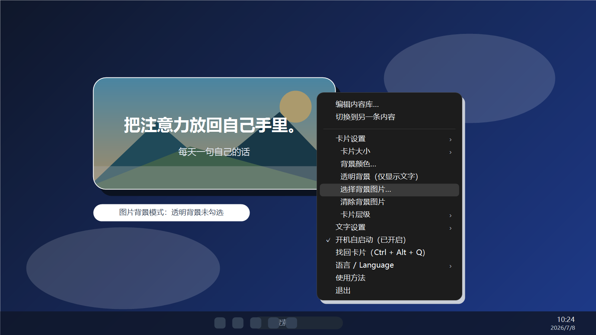
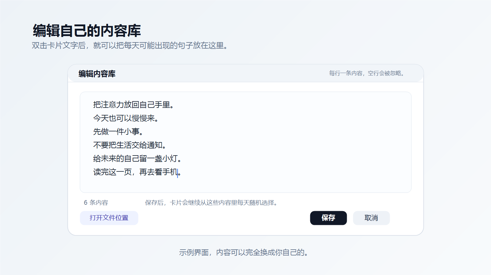
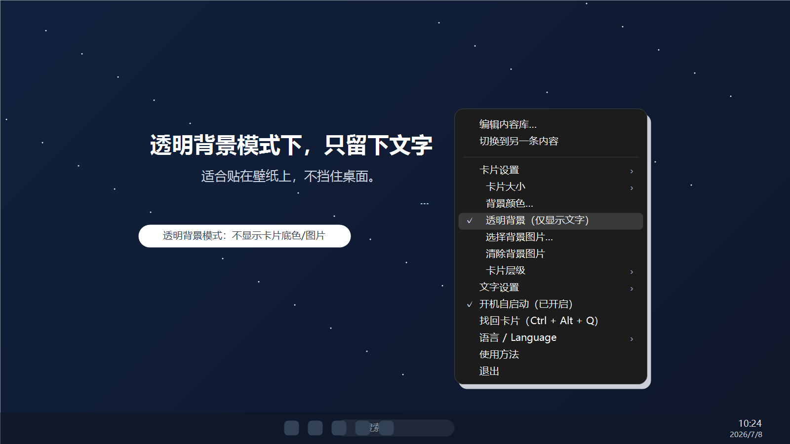

Windows 桌面卡片 · 本地离线 · 自定义文字
小笺
把你自己的话，放在你自己的桌面上。
它不是待办，也不是日历。它只做一件小事：每天从你写下的内容里随机显示一条，像一张安静的小纸条。
目前是 Windows 版。手机版还在想，如果你也想要，可以先留言告诉我。

内容由你决定
句子、提醒、摘录、小段文字都可以。每一行就是一条内容。
每天随机一条
每天换一句，不显示日期和星期几，不抢你的注意力。
本地保存
不联网，不收集数据。内容库只保存在你的电脑里。
它可以很简单，也可以变成你的样子。
- 自定义背景颜色、文字颜色和字体
- 支持背景图片和透明背景
- 可以拖动位置，也可以拉动边缘调整大小
- 文字可以自动适应卡片
- 可选开机自启动
- 找不到卡片时，可用 Ctrl + Alt + Q 找回
适合放什么？
一句想记住的话，一段写给自己的提醒，一条读书摘录，一个短短的目标，或者任何只想偶尔看见的东西。
截图

